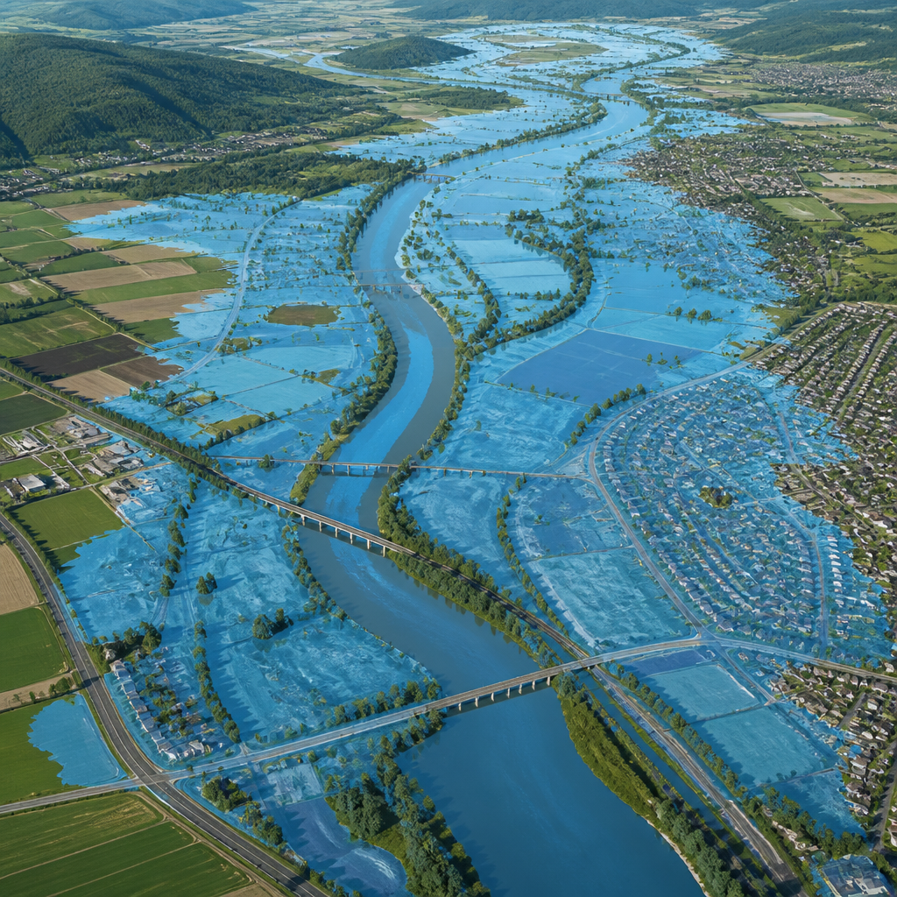
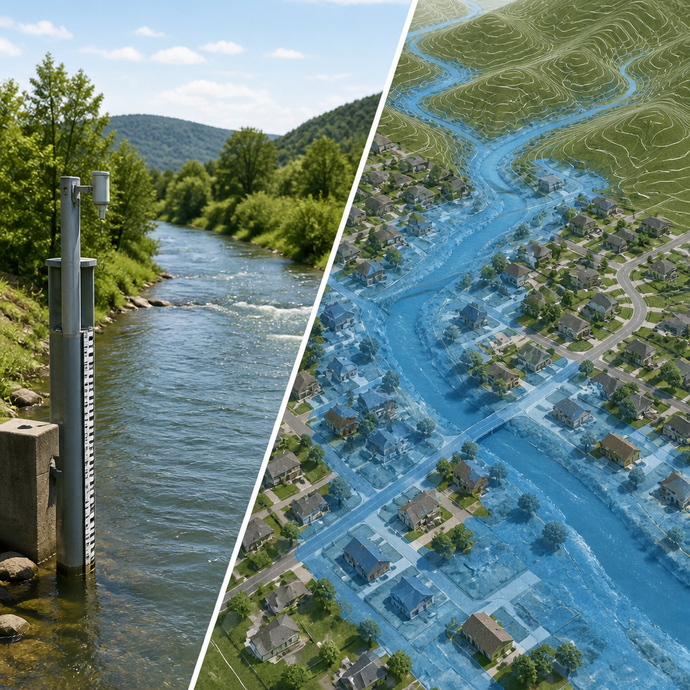

Lo strumento sperimentale mostra, su scala di quartiere, le aree che potrebbero essere coperte dall’acqua nei giorni successivi.
Il Servizio meteorologico nazionale della NOAA ha annunciato l’espansione sperimentale del proprio sistema di mappatura delle inondazioni, chiamato Flood Inundation Mapping. Lo strumento è ora disponibile per quasi il cento per cento della popolazione degli Stati Uniti, un ampliamento rilevante rispetto alla precedente copertura, che raggiungeva il sessanta per cento del Paese.
La mappa di inondazione stima quali superfici di terra potrebbero essere coperte dall’acqua. Per farlo combina le previsioni della portata dei fiumi elaborate dai modelli con le condizioni osservate: la portata è la quantità d’acqua che attraversa un tratto di corso d’acqua in un dato intervallo. Il risultato serve a individuare dove gli effetti di una piena potrebbero manifestarsi nei giorni successivi.
Il sistema non si limita a indicare l’altezza prevista del colmo del fiume, cioè il livello massimo atteso durante una piena. Rappresenta invece il potenziale allagamento lungo fiumi e torrenti su una scala di quartiere. Questa visualizzazione è pensata per previsori, responsabili delle emergenze e cittadini, offrendo un quadro aggiornato delle condizioni di allagamento dei corsi d’acqua.
La copertura comprende oltre tre milioni di miglia di fiumi nell’area continentale degli Stati Uniti, nelle Hawaii e nei territori statunitensi. Nell’ultima estensione sono entrate nuove aree della costa sud-orientale e della Florida, della regione dei Grandi Laghi, del New England, delle Montagne Rocciose, delle Dakota e del Nebraska occidentale.

Secondo la NOAA, il sistema è già stato usato dagli uffici locali del Servizio meteorologico nazionale per valutare e comunicare il massimo potenziale di piena a responsabili delle emergenze, strutture sanitarie e altri soggetti chiamati a decidere. Nella primavera del 2025, l’ufficio di Nashville ha fornito a una struttura di assistenza per anziani nella contea di Macon informazioni utili per evacuare gli ospiti alcune ore prima dell’arrivo dell’acqua.
Nell’aprile 2025, l’ufficio di Little Rock ha condiviso le mappe con la città di Hardy, dove sono state effettuate evacuazioni porta a porta. Durante il rapido sviluppo di tempeste nel Texas centrale, nel fine settimana dal 4 al 7 luglio 2025, l’ufficio di Austin/San Antonio ha distribuito le mappe ai responsabili dell’emergenza di Georgetown, permettendo la chiusura di strade e l’evacuazione di residenti.
Un altro utilizzo è stato segnalato nel gennaio 2025, quando l’ufficio locale di Shreveport ha rilevato un imminente e marcato innalzamento del fiume Glover in Oklahoma: la mappatura ha consentito al personale locale di evacuare alcuni residenti prima della crescita del livello del fiume. Nell’aprile 2026, durante un’alluvione da importante a record del fiume Muskegon in Michigan, l’ufficio di Grand Rapids l’ha usata come strumento essenziale di consapevolezza in zone con poche altre indicazioni disponibili.
Il servizio era stato avviato nel 2023, quando copriva il dieci per cento della popolazione degli Stati Uniti, ed era arrivato al sessanta per cento nel 2025. Nonostante l’attuale copertura vicina alla totalità dei residenti, restano escluse le porzioni settentrionali e occidentali dell’Alaska, Guam, le Isole Marianne Settentrionali e le Samoa Americane.
Per gli Stati Uniti continentali e alcune zone dell’Alaska centro-meridionale sono disponibili, quasi in tempo reale, quattro versioni: un’analisi oraria delle condizioni attuali del Modello idrologico nazionale; una previsione di inondazione a cinque giorni dello stesso modello; una previsione a cinque giorni dei centri di previsione fluviale del Servizio meteorologico nazionale; e mappe statiche per categorie in punti selezionati di previsione fluviale. Per Hawaii, Porto Rico e Isole Vergini statunitensi sono disponibili l’analisi oraria, una previsione a quarantotto ore e le mappe statiche per categorie in punti selezionati con misurazioni.
La mappatura sperimentale della NOAA trasforma le previsioni e le condizioni dei fiumi in una rappresentazione delle zone potenzialmente allagate. L’obiettivo è aiutare a capire non solo quanto potrebbe salire un corso d’acqua, ma anche dove l’acqua potrebbe arrivare.
Questo articolo l'hai letto sul blog di Meteo News Radar: un'app che ti mostra da dove vengono i numeri, invece di limitarsi a dartelo. E ogni mattina ne trovi uno nuovo come questo.